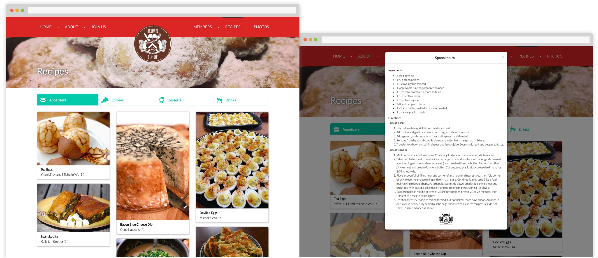

Redesigning Princeton Brown Co-op's website
Creating a site that was more expressive and useful for current and potential members • 2015
Brown Co-op is one of Princeton's food cooperatives - an alternative to dining halls and eating clubs for students. I co-led a redesign of Brown's website in time for its annual member recruitment season - from defining the vision to getting hands-on with front-end coding. The new site enabled Brown to better showcase its personality and communicate information to prospective members, while remaining easy to maintain.
The Challenge
Brown had used the same website since 2013 and was looking for a refresh in time for its next member recruitment period. Through a kickoff discussion with Brown's co-presidents and webmaster, we were able to define our goals, priorities, and constraints for the new site:
- Give prospective members a "taste" of Brown - A key visitor segment would be students thinking of joining the co-op. How could the website be a vehicle for Brown to express its personality and share relevant information?
- Streamline the recruitment process - Brown's annual membership lottery was coming up, and they wanted the site to be a channel through which students could log their interest.
- Easy for anyone to update - The team valued that this aspect of the existing site, so we agreed that this would be the case for the redesign too.
Approach
With these objectives in mind, my project partner Jenny and I got to work. We worked in close collaboration - from trading wireframe sketches for the site's pages to pair programming.
In our design choices, we were intentional about how we could convey the cozy (and delicious) experience of being a part of Brown; this meant sticking to a warm autumn color palette, and in some cases adding content elements (e.g., photos to the member page). The project also gave us a chance to rethink certain UI choices. For example, we converted the recipes page from a long page with page jumps (to toggle between recipes and 'back to top') into a card-based UI.
To put our sketches into production, we drew from Bootstrap's component library to expedite our process. The redesign also involved making the site responsive, so we made sure to adapt our layout to multiple device sizes.

Outcome
After developing a code-based prototype of the site, we shared our work with the Brown team so that we could iterate together before fleshing out the entire site. Then, following some quick QA/bug testing, the new site went live for Brown's member recruitment period. The site was well-received by Brown's officer team and the other co-op members, and continues to be used and updated today.